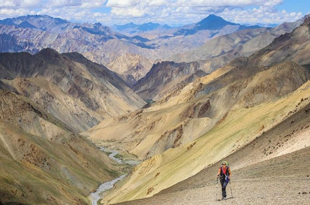
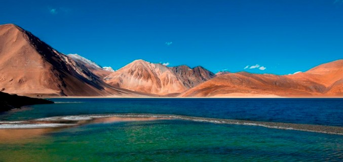

Adventure Highlights

Leh Bike Trip
Ride through dangerous mountain roads and stunning valleys on one of the world's most adventurous bike journeys.

Mountain Trekking
Experience thrilling Himalayan trekking trails with beautiful landscapes and snowy peaks.

Pangong Lake
Witness the magical blue waters of Pangong Lake surrounded by majestic mountains.